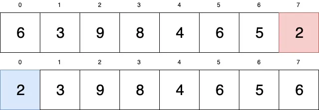

Sorting Algorithms: Selection Sort
Sorting Algorithms: Selection Sort
Detailed understanding of the working of the selection sort algorithm and its implementation in C++

In this article, I'll be covering selection sort algorithm. Most programming languages will come with a built-in sort function but in order to write better code, you need to know what's going on in the background. If you are preparing for software engineering interviews, it's very likely that this sorting algorithm may come up during your interviews.
What is Selection Sort?
Selection Sort is the third in our list of easy-to-understand algorithms (Bubble Sort and Insertion Sort being the first two). Similar to Bubble and Insertion sorting algorithms, Selection Sort is not a fast algorithm but nonetheless, important to know.
How Does it Work?
Let's have a look at the array we want to sort:
The way we are going to sort this list is by dividing it into two separate lists within that list. One sublist will represent our sorted numbers and the other will represent our unsorted numbers. Initially, our entire array represents the unsorted list.
We are going to search through our array for the smallest number. Once we have found the smallest number, we append it to our sorted list (i.e. make room for it in the beginning of the array). This happens in-place in the input array.
If we traverse through our array, we start at index 0 and consider whatever is there as our smallest value.
Continue to traverse the array and if you find any value that is smaller than what is saved before, change the smallest value to the new one. So if smallest=6 and we go to the next index, we see that 3 is smaller than 6 so smallest now equals 3. Continue through the entire array until you have found the smallest value. In our case, we find that 2 is the smallest value.
Now what? Take the leftmost value and swap it with your smallest value. Your array is now split in two: the blue portion is the sorted array and the rest is the unsorted array. Let's see another iteration:
This time our unsorted array starts from index 1 because our sorted array has reserved index 0. We set smallest to what is in index 1 (smallest=3). We will compare smallest with every other value in the array, if there is any value that is smaller, we set smallest to that value. In this case, we see that 3 is the smallest value. We don't need to swap 3 with itself so 3 now becomes part of the sorted array.
Next iteration:

We start at index 2 with smallest= 9. After going through the whole array, we find that 4 is the smallest value. 9 and 4 swap.
We continue to increase the size of our sorted array in this manner until we get the fully sorted array:
Code
#include<bits/stdc++.h>
using namespace std;
void selection_sort(int arr[], int n) {
// selection sort
for (int i = 0; i < n - 1; i++) {
int mini = i;
for (int j = i + 1; j < n; j++) {
if (arr[j] < arr[mini]) {
mini = j;
}
}
int temp = arr[mini];
arr[mini] = arr[i];
arr[i] = temp;
}
cout << "After selection sort: " << "\n";
for (int i = 0; i < n; i++) {
cout << arr[i] << " ";
}
cout << "\n";
}
int main() {
int arr[] = {13,46,24,52,20,9};
int n = sizeof(arr) / sizeof(arr[0]);
cout << "Before selection sort: " << "\n";
for (int i = 0; i < n; i++) {
cout << arr[i] << " ";
}
cout << "\n";
selection_sort(arr, n);
return 0;
}
Output
Before selection sort:
13 46 24 52 20 9
After selection sort:
9 13 20 24 46 52
Time & Space Complexity
Time complexity: O(N2), (where N = size of the array), for the
best, worst, and
average cases.
Space Complexity: O(1)